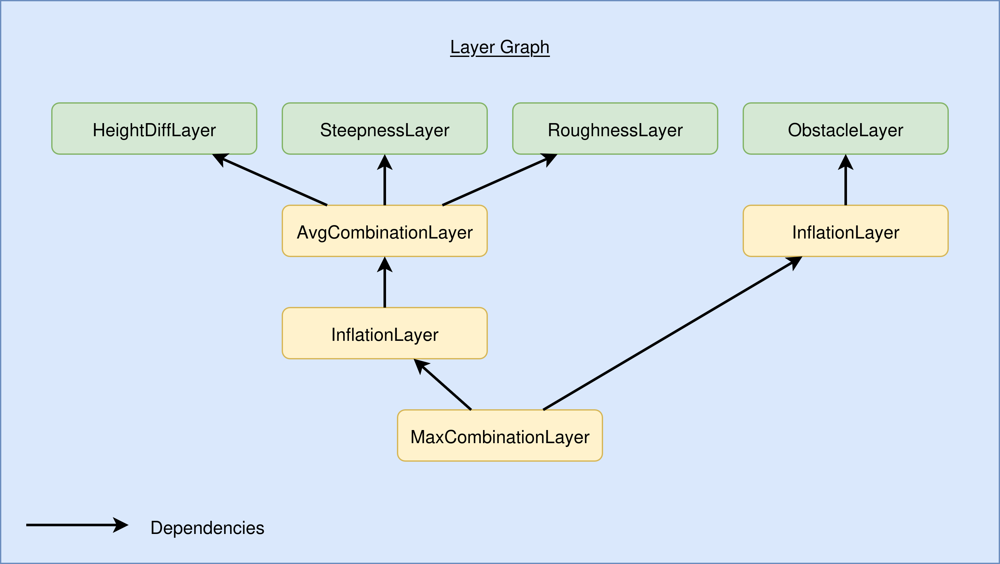

Cost Layer Generation
Cost layers are used inside of mesh navigation to assign parts of the mesh several properties that can be considered for path planning and local planning. For example
- traversibility properties such as roughness, friction, etc.
- lethal zones: such as borders of cliffs
- prohibition areas where the robot should not drive because of certain safety regulations
- obstacle layers: recording low-latency obstacle updates which can be used to avoid obstacles either in the planners or in the controllers
Static Cost Layers
Mesh Navigation provides a collection of layers that pre-compute static traversibility costs on the mesh surface. Each layer takes different geometric/semantic properties into account:
| Layer | Plugin Type Specifier | Description of Cost Computation | Example Image |
|---|---|---|---|
| HeightDiffLayer | mesh_layers/HeightDiffLayer |
height difference in a radius around the vertex |  |
| RoughnessLayer | mesh_layers/RoughnessLayer |
local radius based normal fluctuation |  |
| SteepnessLayer | mesh_layers/SteepnessLayer |
arccos of the normal's z coordinate |  |
| RidgeLayer | mesh_layer/RidgeLayer |
local radius based distance along normal. This can be useful to drive along ridge or bed structures in agricultural scenarios (e.g. potatoes, carrots, or onions). Hereby, the upper part of the ridges would have higher costs while the valleys would have low costs. This can be useful to plan vehicle wheel trajectories and only allow driving inside the ridge valleys (and thus not damage crops). |  |
| ClearanceLayer | mesh_layers/ClearanceLayer |
comparison of robot height and clearance along each vertex normal |  |
| InflationLayer | mesh_layers/InflationLayer |
by distance to a lethal vertex |  |
| BorderLayer | mesh_layers/BorderLayer |
give vertices close to the border a certain cost |  |
Dynamic Layers
Obstacle Layer
The obstacle layer enables the planner to recognize and navigate around obstacles. It subscribes to a topic providing obstacle points (e.g., from pre-segmented LiDAR data) and projects these points down onto the mesh surface. The vertices of the intersected faces are then marked as lethal, preventing the planner from finding paths through them.
In most setups, an inflation layer is added directly after the obstacle layer. This layer expands the lethal regions to form a safety margin or buffer zone around detected obstacles. Within this zone, the robot can still plan paths, but it is encouraged to move cautiously and maintain a safe distance from potentially dynamic or unknown objects.
To start with why obstacle avoidance is important, we start with showing what happens when you ignore it.
ros2 launch mesh_navigation_tutorials mesh_navigation_tutorials_launch.py world_name:=tray
Then:
- Place a ball in front of the robot using the Gazebo GUI elements top left.
- Go the RViz window and select a goal pose behind the ball (the dynamic obstacle).
You will see the robot crashing into the ball.
Unless you want to create a soccer robot, this is usually not a wanted behavior. Especially in reality, when it's not a ball but a human being. Fortunately, the obstacle layer can help us here. First, we need some kind of pre-filtered scan that only contains points of the dynamic points.
Luckily, the integrated localization package RMCL already contains nodes to do that a very simplistic but fairly fast filtering of our scan points based on the mesh map. It removes points of a LiDAR scan that are close to the map. The remaining points are classified as "unexpected" and can pretty well be used as input for the obstacle layer.
Warning
The following command requires RMCL to be installed.
Enable this pre-segmentation by calling
ros2 launch mesh_navigation_tutorials mesh_navigation_tutorials_launch.py world_name:=tray obtacle_segmentation:=rmcl_seg
After repeating the steps 1. and 2. from above, the ball is detected as dynamic obstacle, projected onto the obstacle, and finally considered during planning.
| Parameter | Type | Description |
|---|---|---|
robot_height |
Float | Height of the robot (in meters) considered for projection. You can use this to let small robots drive below tables. |
max_obstacle_dist |
Float | Obstacles points farther away then this parameter's value are ignored. |
topic |
String | Input obstacle points topic of message type sensor_msgs/PointCloud2 |
Graph Layer System
The planner operates on a single cost layer that can have combined costs from other cost layers. Using the Graph Layer system, users can configure which cost layers contribute to it and with what weighting factors.
On startup, all configured cost layers are loaded by the MeshMap and are stored in a dependency graph data structure.
This dependency graph is a directed graph with an edge between two layers A and B if the layer A uses B as an input.
An example of a layer that uses another layer as an input is the inflation layer, which inflates obstacles in the map to keep the robot at a safe distance.
Computing the inflation layer can take up to several seconds in larger real-world meshes, which is a problem if we add moving obstacles to the map using the obstacle layer because we need to recompute the inflation layer every time the obstacle layer is updated. Our graph-based approach allows us to split the inflation layer computation into static obstacles, which are computed once when mesh navigation initializes, and dynamic obstacles, which are continuously updated but only affect a small region of the map around the robot and can therefore be inflated very fast.
The following image shows an example layer configuration with static obstacles detected by three layers and dynamic obstacles. The AvgCombinationLayer and MaxCombinationLayer merge their respective input layers by merging the lethal vertices and calculating the cost for each vertex as the average and maximum of their respective input layers. The MaxCombinationLayer at the bottom is the final layer used by the planning and control plugins.
